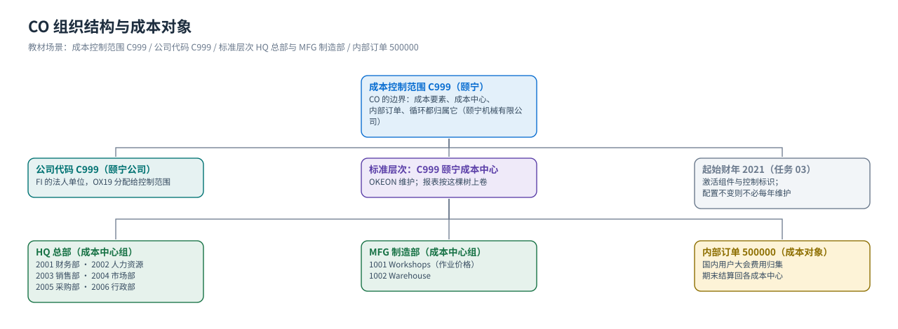

组织结构
成本控制范围 / 成本中心标准层次 / 成本中心组与成本中心 —— 先给成本定坐标
组织数据是 CO 的「坐标系」：先在后台把成本控制范围、成本中心组、成本中心这些「格子」画好，之后每一笔费用、每一条分配规则都挂在这些格子上。教材的 CO 模块前 4 个任务全在做这件事（任务 04 就是标准层次的全过程），顺序不能颠倒。
① 成本控制范围：CO 的边界
{kind=link}

| 对象 | 教材任务 | 含义 | 在 CO 里决定什么 |
|---|---|---|---|
成本控制范围 Controlling Area C999 颐宁机械有限公司 | 任务 01 | 管理会计的组织边界，所有成本要素、成本中心、内部订单、循环都归属于一个成本控制范围 | 成本要素的编号范围由控制范围决定；跨公司代码的成本分摊也在这个范围内做 |
公司代码 Company Code C999 | 任务 02（OX19） | 对外出具财务报表的法人单位（FI 建） | 把公司代码挂到成本控制范围后，这个公司的费用才能进 CO |
| 控制标识 / 组件激活 | 任务 03 | 成本控制范围的「开关」：激活成本中心会计、内部订单等组件 | 没激活组件，前台事务码用不了（任务 03 教材特意让学生去点「激活组建/控制标识」） |
| 会计年度 | 任务 03 | 设定起始财年（教材填 2021） | 决定 CO 从哪一年开始有期间；配置不变时不必每年维护（教材提示原话） |
| 标准层次 Standard Hierarchy | 任务 04（OKEON） | 成本控制范围内的成本中心树，最高节点与控制范围同名 | 所有成本中心都必须挂在标准层次上；报表按这棵树汇总 |
怎么在自己系统里看成本控制范围清单：
OKKP（IMG：控制 → 一般控制 → 组织结构 → 维护成本控制范围）；把公司代码分配给成本控制范围：OX19；标准层次与成本中心：OKEON（或 KS01 建、KS03 显示）；表：TKA01 成本控制范围、TKA02 控制范围↔公司代码、CSKS/CSKT 成本中心。② 标准层次：成本中心组与成本中心的树
| 层级 | 教材值 | 说明 |
|---|---|---|
| 最高节点（控制范围） | C999 颐宁成本中心 | 与控制范围同名，教材任务 04 里点保存后能看到 |
| 第 1 层成本中心组 | HQ 总部 Headquarters · MFG 制造部 Manufacturing Group | 教材任务 04 先建 MFG、再建「总部」 |
| HQ 下的成本中心 | 2001 财务部 Financial · 2002 人力资源 HR Department · 2003 销售部 Sales Department · 2004 市场部 Market Department · 2005 采购部 Purchasing Department · 2006 行政部 Admin Department | 房租只分给 HQ 各成本中心（制造部不在这个办公物业里，教材的原话） |
| MFG 下的成本中心 | 1001 Workshops · 1002 Warehouse | 作业类型与作业价格挂在 1001 上；电费分摊给 1001/1002 |
| 成本中心的字段 | 教材值（以 2006 行政部为例） | 含义 / 影响 |
|---|---|---|
| 成本中心编号 | 2006 | 可用外部编号（教材手工给号）或内部给号 |
| 名称 | 行政部 / Admin Department | 报表上显示的名字，中英文都可 |
| 成本中心组 | HQ（总部） | 决定它在标准层次里的位置，也是分配循环的接收方 |
| 负责人 / 用户 | 画面给的值（如 Sunny） | 只用于报表与沟通，不影响记账 |
| 成本中心类别 | W（管理机构） | 决定主数据哪些字段可用；生产类成本中心常配 F 类（可承担作业） |
| 有效期 | 01.01.2021 – 31.12.9999 | 过账日期必须落在有效期内，否则报错 |
| 货币 / 利润中心 | 按控制范围货币（CNY） | 利润中心用于「成本中心 → 利润中心」的上卷分析（教材未演示） |
教材里的两个细节① 任务 04 里创建成本中心时出现黄色警告（提示字段未填全），教材明确写着「可以略过」——警告不阻止保存，但项目上要把必要字段补齐；② 任务 03 保存控制范围时系统提示「C999 成本中心标准层次不存在，点击是」，系统会替你建好标准层次的骨架，这正是下一步
OKEON 能直接建组的原因。③ 三类常用「组」的区别
| 组 | 维护事务码 | 教材任务 | 用途 |
|---|---|---|---|
| 成本中心组 / 标准层次 | OKEON（建）/ KSH1/KSH2（非标准层次的组） | 任务 04 | 报表与分配/分摊循环的接收方；每个成本中心只有一个标准层次节点 |
| 成本要素组 | KAH1/KAH2/KAH3（教材写 KAH1 创建） | 任务 07 | 把成本要素按层次归组，报表和分配规则可以按组选（如教材的 PRI） |
| 作业类型组 | KLH1/KLH2 | 任务 11 | 把 LAB/MAC/SET 等作业类型分组，便于按组显示与维护价格 |
④ 分配关系与基数
| 分配关系 | 教材任务 | 基数 | 含义 |
|---|---|---|---|
| 公司代码 → 成本控制范围 | 任务 02 | 多对一 | 一个成本控制范围下可以挂多个公司代码（教材是一对一，都用 C999） |
| 成本中心 → 成本中心组（标准层次） | 任务 04 | 多对一 | 每个成本中心只能属于标准层次的一个节点；组本身可以嵌套 |
| 成本中心 → 成本控制范围 | 任务 04 | 多对一 | 成本中心编号在控制范围内唯一 |
| 统计指标 → 成本控制范围 | 任务 18 | 多对一 | RENT 这类统计指标在控制范围内定义，各成本中心录自己的数量 |
| 作业类型 → 控制范围 / 成本中心 | 任务 10/12 | 多对多 | 一个作业类型可以被多个成本中心使用，价格按「成本中心 + 作业类型」维护 |
组织数据决定了什么（背下来这一张）
| 问题 | 答案由谁决定 |
|---|---|
| 这笔费用能进 CO 吗？ | 公司代码是否分配给成本控制范围（任务 02）+ 费用科目是否建了初级成本要素（任务 05） |
| 费用记在哪个成本对象上？ | 费用凭证行项目上的账户分配：成本中心（2001/2006）、内部订单（500000） |
| 分配循环的接收方是谁？ | 成本中心组（任务 20 的接收方是 HQ；任务 23 的接收方是 MFG） |
| 分摊的比例从哪来？ | 统计指标实际值（RENT，任务 19）或固定百分比（任务 23 的 75% / 25%） |
| 内部订单结算给谁、结多少？ | 订单的结算规则（任务 31：按成本中心维护份额） |
| 报表里能按部门/工厂汇总吗？ | 标准层次的层级结构（任务 04） |
教材画面（组织与后台参数）


要做这些后台配置，先按本页弄清组织层，再打开 配置篇 的任务 01–04 照着做。